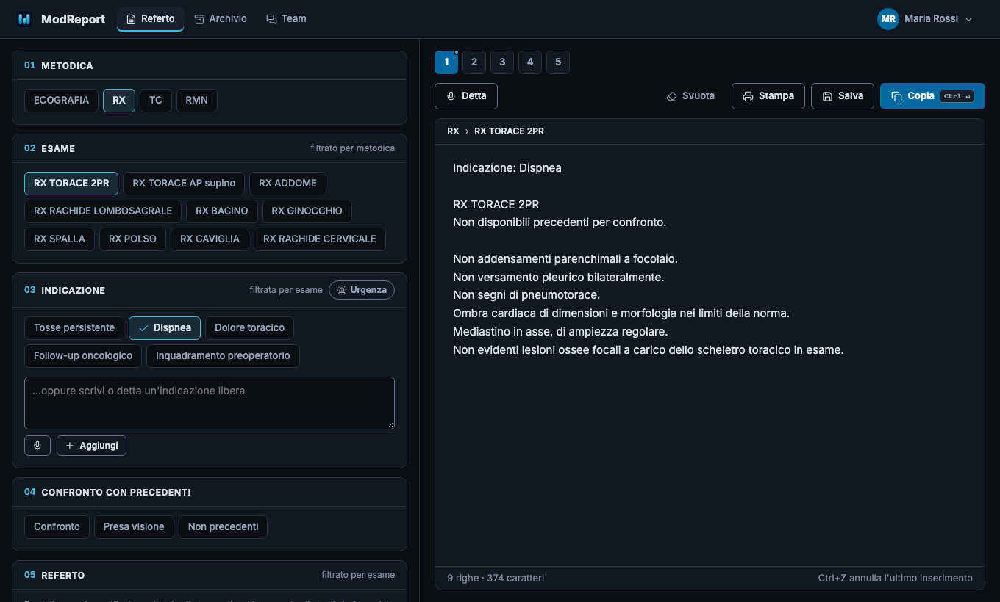
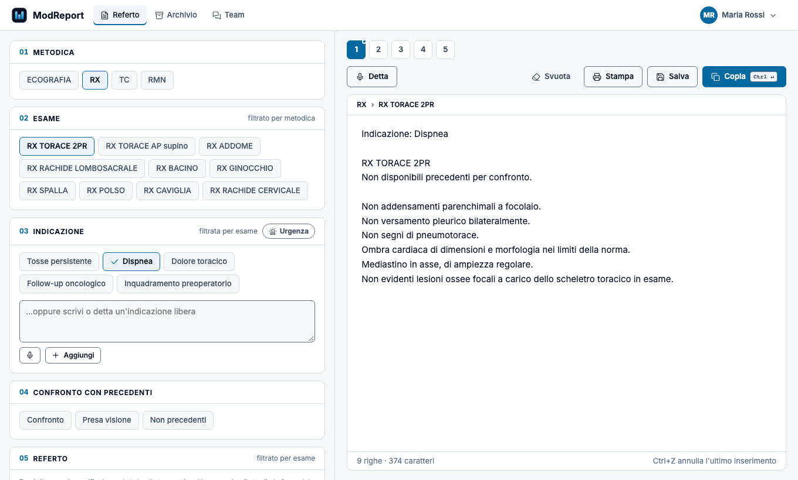

Referto a blocchi
Metodica, esame, indicazione e frasi si filtrano a cascata. Un clic aggiunge la frase al punto giusto del referto, un altro la toglie.
Componi il referto a blocchi con le tue frasi, dettalo a voce, poi copialo nel RIS o stampalo su carta intestata. Funziona nel browser, senza installare nulla.
Gratuito durante la beta · Nessuna carta di credito · Guarda come funziona


Uno spazio di lavoro pensato per chi referta ogni giorno, accanto al RIS che usi già.
Metodica, esame, indicazione e frasi si filtrano a cascata. Un clic aggiunge la frase al punto giusto del referto, un altro la toglie.
Frasi normali e patologiche per ogni esame, divise in gruppi. Le modifichi dall'account, importi i tuoi referti tipo e le esporti quando vuoi.
Detta indicazioni e referto con il riconoscimento vocale del browser. Ti diciamo chiaramente chi elabora l'audio, e puoi disattivarla.
Copia nel RIS con un clic oppure genera il PDF su carta intestata, anche su più pagine, con anteprima prima di stampare.
Ospedale, studio o casa: la tua libreria ti segue. Con l'opzione «Postazione condivisa» la sessione si chiude da sola dopo 30 minuti di inattività.
Canali per il tuo gruppo, inviti con scadenza e ruoli. Più team separati, ciascuno visibile solo ai suoi membri.
Ecografia, RX, TC o RMN
Filtrato in automatico
Un clic o dettata a voce
Con l'esame precedente
Da copiare o stampare
Il testo che componi non viene salvato sui nostri server: bozza e archivio vivono nel tuo browser. Nel cloud va solo ciò che serve a ritrovare il tuo ambiente su ogni postazione.
ModReport è uno strumento di scrittura e organizzazione di testi per professionisti della radiologia. Consente di comporre testi a partire da frasi personalizzabili, dettarli, copiarli o stamparli. Non elabora immagini né dati clinici per fornire diagnosi, misure, punteggi, classificazioni o raccomandazioni e non sostituisce il giudizio del medico.
Tutte le funzioni, senza limiti, finché dura la beta.
No. Lavora accanto al RIS che usi già: componi il testo in ModReport e lo incolli nel RIS, oppure stampi il PDF sulla tua carta intestata.
Il testo del referto no: resta nel browser in cui lavori, anche nell'archivio. Sui nostri server vanno libreria, preferenze, carta intestata e messaggi del team; in questi non vanno inseriti dati che identificano i pazienti. Quando importi i tuoi referti tipo, ModReport blocca i testi che sembrano contenere dati identificativi (date, codici fiscali, numeri di accettazione…).
Usa il riconoscimento vocale integrato nel browser. In Chrome ed Edge l'audio è elaborato dai server di Google o Microsoft, in Safari da Apple; ModReport riceve solo il testo trascritto e non registra l'audio. Al primo utilizzo te lo ricordiamo, e puoi disattivare la dettatura dalle preferenze.
Sì. Parti da una libreria di esempio e la modifichi esame per esame, oppure importi i tuoi referti tipo: ModReport li divide in frasi e ti propone se sono normali o patologiche. Puoi esportare la libreria in un file e reimportarla quando vuoi.
Serve solo un browser recente (Chrome, Edge, Firefox o Safari), senza installazioni né permessi di amministratore. La dettatura funziona in Chrome, Edge e Safari. Sulle postazioni condivise attiva "Postazione condivisa" all'accesso: la sessione non resta salvata e si chiude dopo 30 minuti di inattività.
No. È uno strumento di scrittura: non analizza immagini, non calcola punteggi o categorie e non suggerisce diagnosi. Il contenuto del referto resta sempre una scelta del medico.
Oggi è gratuito. Se in futuro introdurremo piani a pagamento, avranno condizioni di vendita separate che dovrai accettare espressamente prima di qualsiasi addebito.
Sì, in qualsiasi momento da Account → Profilo: account, libreria, carte intestate e dati del cloud vengono eliminati subito. L'archivio locale lo cancelli dalla pagina Archivio.
Crea l'account in pochi passaggi, oppure provalo subito senza registrarti: in modalità locale tutto resta in questo browser.